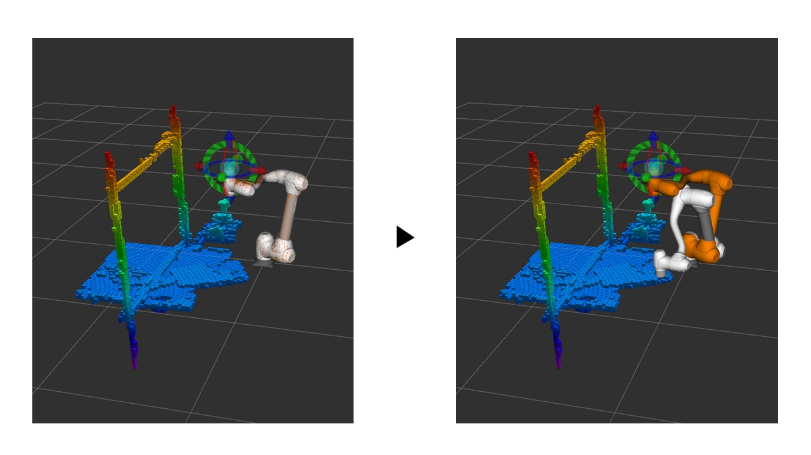

본 페이지는 Day2의 2차시 학습 로봇 모션 제어 및 시뮬레이션을 다룹니다.
이번 차시에서는 MoveIt 패키지를 사용해서 로봇을 동작시키는 예시와 두산 로봇의 기본적인 제어 방식을 학습합니다. ROS2 환경이 구축된 로컬 PC 또는 제공된 원격 환경에서 실습을 진행해 주세요.
# ROS2 작업 환경 소싱 확인 (터미널)
source /opt/ros/humble/setup.bash
source ~/ros2_ws/install/setup.bash
# MoveIt 관련 패키지 설치 확인
ros2 pkg list | grep moveit
기본 학습 ─ 로봇 제어 기초
1. 기본적인 두산로봇 컨트롤
산업용 로봇 제어에 많이 사용되는 moveline과 movejoint 서비스를 사용하는 방식을 알아봅니다. 터미널에서 ROS2 Service Call을 통해 직접 로봇을 제어할 수 있습니다.
📖 이론 설명
moveline은 기본적으로 엔드이펙터 위치 및 자세를 지정해서 사용 가능하고, movejoint는 각 관절 각도를 조정해서 로봇을 이동시킵니다. moveline으로 동작할 때는 ZYZ 오일러 회전으로 자세를 표현합니다.
문제는 이러한 제어 방식이 궤적 계획, 관절각도 계산 등을 로봇 제어기 내부에서 자체적으로 실행하기 때문에 시작점과 끝점밖에 지정하지 못한다는 것입니다. 이 경우 MoveIt으로 구한 복잡한 장애물 회피 궤적을 바탕으로 로봇을 제어하는 것이 어렵다는 한계가 존재합니다.
터미널에서 dsr_msgs2/srv/MoveLine 서비스에 필요한 파라미터 구조(pos, vel, acc 등)를 파악합니다.
2
MoveLine 서비스 호출 (TODO)
로봇을 특정 좌표로 직선 이동시키기 위해 ros2 service call 명령어를 작성하고 실행합니다.
# 두산로봇 가상 모드 실행(터미널)
ros2 launch dsr_bringup2 dsr_bringup2_rviz.launch.py mode:=virtual model:=m1013 gui:=true
✅ 정답 예시 확인하기
# 정상적인 궤적과 속도로 이동하도록 채워진 명령어
ros2 service call /dsr01/motion/move_line dsr_msgs2/srv/MoveLine '{
pos: [537.51629639, 397.68896484, 219.40478516, 172.90522766, 155.36242676, -75.98764038],
vel: [30.0, 30.0],
acc: [40.0, 40.0],
time: 0.0,
radius: 0.0,
ref: 0,
mode: 0,
blend_type: 0,
sync_type: 0
}'
2. moveit을 사용한 컨트롤
장애물 회피 궤적을 생성하고 이를 추종하기 위해서는 MoveIt 프레임워크를 사용하는 것이 가장 효율적인 방법입니다. 이번 실습에서는 Python을 통해 액션 클라이언트를 구성하여 목표 포즈로의 궤적 생성을 요청합니다.
📖 이론 설명
MoveIt은 로봇 운동학, 모션 플래닝, 충돌 검사 기능을 통합하여 제공합니다. 시작점과 끝점만 주어지더라도 환경 내의 장애물들을 고려하여 안전한 다관절 궤적을 계산합니다.
주의할 점은 기존 로봇 제어기(예: moveline)가 ZYZ 오일러 각도를 주로 사용하는 반면, MoveIt은 기본적으로 쿼터니언(Quaternion)을 사용하여 회전을 표현한다는 점입니다. 따라서 회전 행렬이나 오일러 각도를 쿼터니언으로 변환하는 로직이 필수적입니다.
— pose_matrix에서 병진(tvec) 및 회전 행렬을 추출하고 제공된 함수를 통해 쿼터니언으로 변환합니다.
2
Action Goal 생성 (TODO)
— 워크스페이스 제약, PositionConstraint 및 OrientationConstraint를 구성하여 목표 제약 조건을 생성합니다.
3
액션 전송 및 대기 (TODO)
— 구성된 goal_msg를 MoveIt 서버로 send_goal_async를 통해 비동기로 전송하고 결과를 대기합니다.
4
결과 처리 (TODO)
— 액션의 최종 결과값의 에러 코드를 확인하여 성공/실패 여부를 반환합니다.
✨ 예상 실행 결과

# 두산로봇 가상 모드 실행(터미널)
ros2 launch dsr_bringup2 dsr_bringup2_rviz.launch.py mode:=virtual model:=m1013 gui:=true
ros2 launch manipulator_practice_python system_bringup.launch.py
# 별도의 창을 열어서 아래 게이트웨이 실행
ros2 run manipulator_practice_python gateway
# 별도의 창을 열어서 아래 서비스 호출
# 4x4 Homogeneous Transformation Matrix 입력 아래는 예시.
ros2 service call /move_to_pose manipulator_practice_cpp/srv/MoveToPose "{pose_matrix: [-0.018947423, -0.99825805, -0.055873353, 0.0676016, -0.9993851, 0.017260587, 0.030519957, 0.670393, -0.029502386, 0.05641727, -0.9979713, 0.209476, 0.0, 0.0, 0.0, 1.0]}"
💻 Python 노드 뼈대 코드 보기
# 클래스 및 기본 변환 함수 생략. handle_move_request 부분을 채워보세요.
async def handle_move_request(self, request, response):
"""서비스 요청이 들어오면 실행되는 함수"""
self.get_logger().info('서비스 요청 수신!')
if not self._action_client.wait_for_server(timeout_sec=2.0):
response.success = False
response.message = "MoveIt 액션 서버를 찾을 수 없습니다."
return response
try:
# 1. 입력 데이터 파싱
mat = request.pose_matrix
# TODO: 회전 행렬 3x3 파싱 및 병진 이동 추출
rotation_flat = [TODO]
tx, ty, tz = TODO, TODO, TODO
# TODO: 쿼터니언 변환
q = self.rotation_matrix_to_quaternion(rotation_flat)
# 2. Action Goal 생성
goal_msg = MoveGroup.Goal()
# TODO: workspace 속성 설정 및 target constraints 지정 (Constraints, PositionConstraint, OrientationConstraint)
goal_con = Constraints()
# ... PositionConstraint 및 OrientationConstraint 추가 로직 작성 ...
# 3. 액션 전송 및 대기 (await 사용)
self.get_logger().info('MoveIt으로 액션 전송 중...')
# TODO: send_goal_async 함수 사용
# goal_handle = await ...
# 4. 결과 처리
# TODO: 에러 코드가 1(SUCCESS)인지 판단하여 분기문 작성
except Exception as e:
response.success = False
response.message = f"서버 내부 에러: {str(e)}"
return response
✅ 정답 예시 확인하기
async def handle_move_request(self, request, response):
"""서비스 요청이 들어오면 실행되는 함수"""
self.get_logger().info('서비스 요청 수신!')
# 액션 서버 연결 확인
if not self._action_client.wait_for_server(timeout_sec=2.0):
response.success = False
response.message = "MoveIt 액션 서버를 찾을 수 없습니다."
self.get_logger().error(response.message)
return response
try:
# 1. 입력 데이터 파싱
mat = request.pose_matrix
# 회전 행렬 추출 (Row-major: 0,1,2 / 4,5,6 / 8,9,10)
rotation_flat = [
mat[0], mat[1], mat[2],
mat[4], mat[5], mat[6],
mat[8], mat[9], mat[10]
]
# 위치 추출 (Row-major: 3, 7, 11)
tx = float(mat[3])
ty = float(mat[7])
tz = float(mat[11])
q = self.rotation_matrix_to_quaternion(rotation_flat)
keep_orientation = self.get_parameter('keep_orientation').value
# 2. Action Goal 생성
goal_msg = MoveGroup.Goal()
goal_msg.request.workspace_parameters.header.frame_id = self.base_frame
goal_msg.request.workspace_parameters.min_corner.x = -2.0
goal_msg.request.workspace_parameters.min_corner.y = -2.0
goal_msg.request.workspace_parameters.min_corner.z = -2.0
goal_msg.request.workspace_parameters.max_corner.x = 2.0
goal_msg.request.workspace_parameters.max_corner.y = 2.0
goal_msg.request.workspace_parameters.max_corner.z = 2.0
goal_msg.request.start_state.is_diff = True
goal_msg.request.group_name = self.group_name
goal_msg.request.num_planning_attempts = 10
goal_msg.request.allowed_planning_time = 5.0
goal_msg.request.max_velocity_scaling_factor = 0.1
goal_msg.request.max_acceleration_scaling_factor = 0.1
# [Goal Constraints] 최종 목표점
goal_con = Constraints()
goal_con.name = "goal_pose"
pos_con = PositionConstraint()
pos_con.header.frame_id = self.base_frame
pos_con.link_name = self.ee_link
pos_con.weight = 1.0
target_box = SolidPrimitive(type=SolidPrimitive.BOX, dimensions=[0.001, 0.001, 0.001])
pos_con.constraint_region.primitives.append(target_box)
box_pose = Pose()
box_pose.position.x, box_pose.position.y, box_pose.position.z = tx, ty, tz
pos_con.constraint_region.primitive_poses.append(box_pose)
goal_con.position_constraints.append(pos_con)
ori_con = OrientationConstraint()
ori_con.header.frame_id = self.base_frame
ori_con.link_name = self.ee_link
ori_con.orientation.x, ori_con.orientation.y, ori_con.orientation.z, ori_con.orientation.w = q[0], q[1], q[2], q[3]
ori_con.absolute_x_axis_tolerance = 0.01
ori_con.absolute_y_axis_tolerance = 0.01
ori_con.absolute_z_axis_tolerance = 0.01
ori_con.weight = 1.0
goal_con.orientation_constraints.append(ori_con)
goal_msg.request.goal_constraints.append(goal_con)
# 3. 액션 전송 및 대기 (await 사용)
self.get_logger().info('MoveIt으로 액션 전송 중...')
send_goal_future = self._action_client.send_goal_async(goal_msg)
goal_handle = await send_goal_future
if not goal_handle.accepted:
response.success = False
response.message = "MoveIt이 경로 계획 요청을 거절했습니다."
self.get_logger().error(response.message)
return response
self.get_logger().info('이동 시작! 완료 대기 중...')
get_result_future = goal_handle.get_result_async()
result_wrapper = await get_result_future
action_result = result_wrapper.result
# 4. 결과 처리
if action_result.error_code.val == 1: # SUCCESS
response.success = True
response.message = "이동 성공 (MoveIt Success)"
self.get_logger().info(response.message)
else:
response.success = False
response.message = f"이동 실패 ErrorCode: {action_result.error_code.val}"
self.get_logger().error(response.message)
except Exception as e:
response.success = False
response.message = f"서버 내부 에러: {str(e)}"
self.get_logger().error(response.message)
return response
심화 학습 ─ 고급 로봇 제어 및 시뮬레이션
3. Doosan Robot 심화 제어
Isaac Sim을 사용한 로봇 시뮬레이션과 실시간 동작을 위한 실시간 로봇 상태 제어를 학습합니다. 시뮬레이터를 통해 가상 환경에서 검증하고, 외부 제어 루프를 활용해 로봇을 정밀 제어할 수 있습니다.
📖 이론 설명
실제 하드웨어를 구동하기 전 NVIDIA Isaac Sim을 활용하면 충돌이나 오류의 위험 없이 물리 엔진을 기반으로 제어 로직을 테스트할 수 있습니다.
또한, 로봇의 자체 궤적 보간기를 거치지 않고 직접 제어기(External Control Loop)를 작성해야 하는 경우, 짧은 주기로 제어 입력을 직접 전달해야 합니다. 두산 로봇에서는 이를 위해 실시간(RT) 통신 토픽을 활용하여 로봇 상태를 받아오고 스트림 기반으로 위치/속도 입력을 인가합니다.